Рецепты сладостей
Яблочные чипсы с корицей
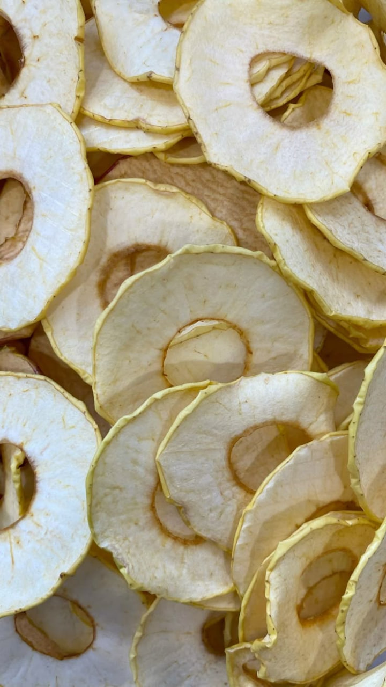📌 Ингредиенты:
- 2 крупных яблока
- 1 ч.л. молотой корицы
- Немного лимонного сока (опционально)
Процесс приготовления.
1. Нарежьте яблоки тонкими кружочками.
2. При желании сбрызните ломтики лимонным соком, чтобы предотвратить потемнение.
3. Посыпьте яблочные дольки корицей.
4. Разложите на противне, застеленном пергаментной бумагой, и сушите в разогретой до 80°C духовке около 2 часов до появления хрустящей текстуры.
✨Яблочные чипсы – вкусная альтернатива магазинным снекам без лишних добавок!
Шоколадный мусс на основе авокадо
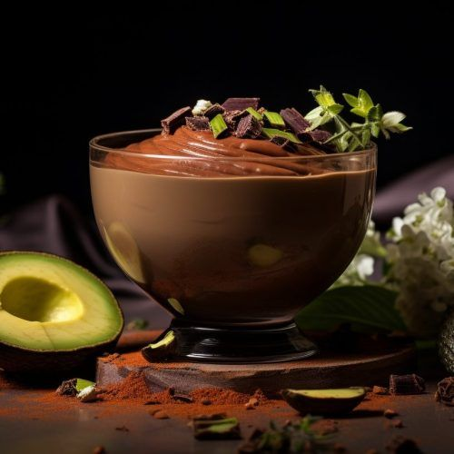📌 Ингредиенты:
- 1 спелое авокадо
- 1 маленький банан
- 2 ст.л. натурального какао-порошка
- Несколько капель ванильного экстракта (по желанию)
Процесс приготовления.
1. Очистите авокадо и банан, нарежьте их кусочками.
2. Поместите все ингредиенты в блендер и взбейте до кремовой однородной массы.
3. Охладите в холодильнике перед подачей.
✨Низкокалорийный, полезный десерт, богатый полезными жирами и антиоксидантами!
Клубничный сорбет
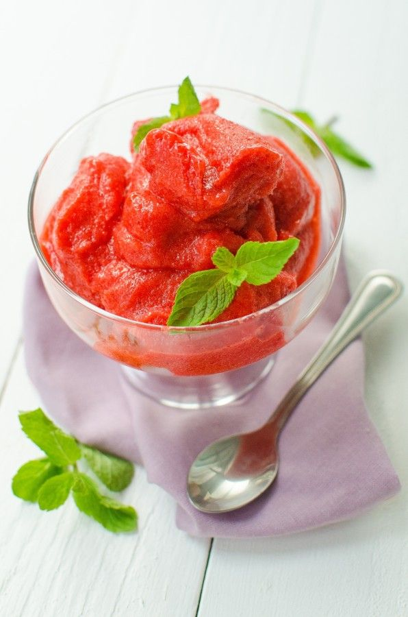📌 Ингредиенты:
- 200 г свежей или замороженной клубники
- 1 ст.л. лимонного сока
- По вкусу – 1–2 ч.л. меда или натурального подсластителя
Процесс приготовления.
1. Измельчите клубнику в блендере вместе с лимонным соком и медом.
2. Полученное пюре разложите в неглубокий контейнер и заморозьте.
3. Каждые 30 минут перемешивайте массу, пока она не станет однородной и лёгкой.
✨Освежающий десерт, который приятно охладит в жаркий день!
Овсяное печенье без сахара
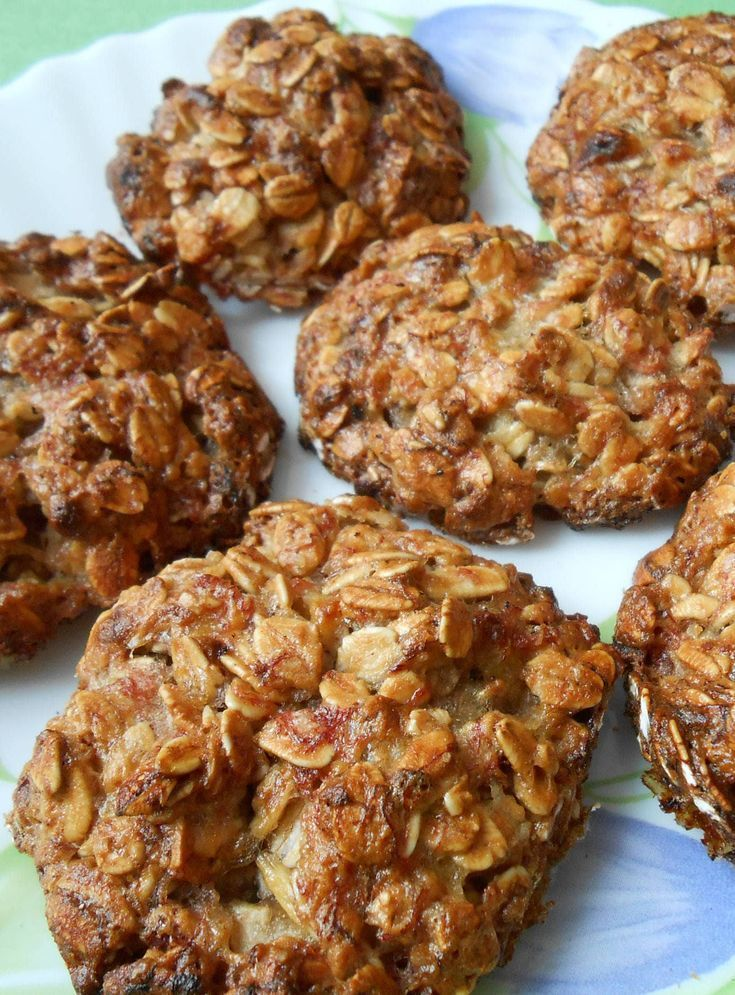📌 Ингредиенты:
- 1 спелый банан
- 100 г овсяных хлопьев (лучше цельнозерновых)
- 1 ч.л. молотой корицы
- По желанию – немного измельчённых сухофруктов (изюм, курага)
Процесс приготовления.
1. Разомните банан вилкой до состояния пюре.
2. Смешайте с овсяными хлопьями, корицей и сухофруктами.
3. Сформируйте небольшие печенюшки и выложите их на противень, застеленный бумагой для выпечки.
4. Выпекайте в разогретой до 180°C духовке 15–20 минут до лёгкого золотистого цвета.
✨Идеальный перекус, который подарит энергию без лишних калорий!
Творожный десерт с медом и лимоном
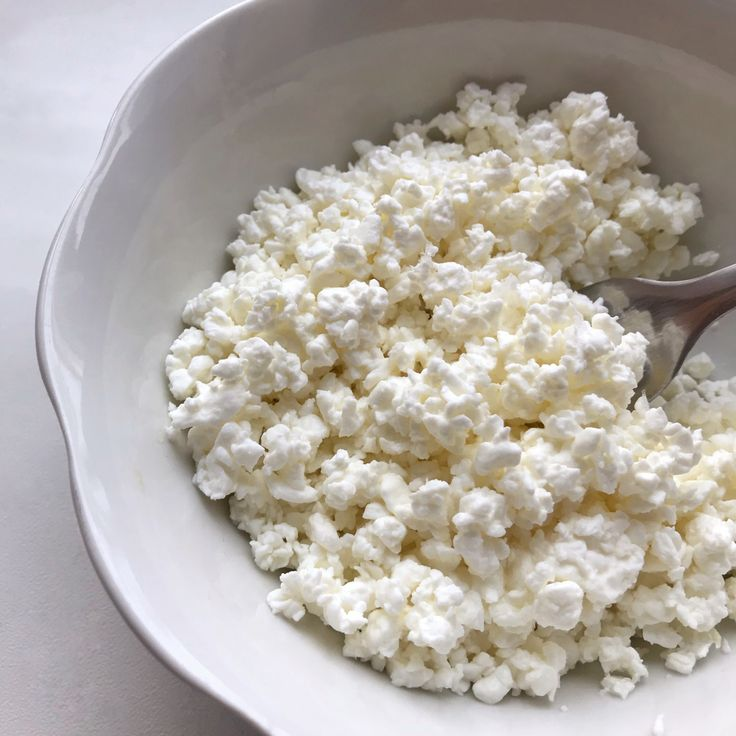📌 Ингредиенты:
- 150 г обезжиренного творога
- 1 ст.л. натурального меда
- Цедра и немного сока 1/2 лимона
- 1 ч.л. ванильного экстракта (по желанию)
Процесс приготовления.
1. Смешайте творог с медом, добавьте лимонную цедру и сок, а также ванильный экстракт.
2. Хорошо перемешайте до однородной кремовой консистенции.
3. Охладите в холодильнике 15 минут перед подачей.
✨Десерт богат белком и освежающим вкусом – отличное окончание обеда!
Банановое смузи-мороженое
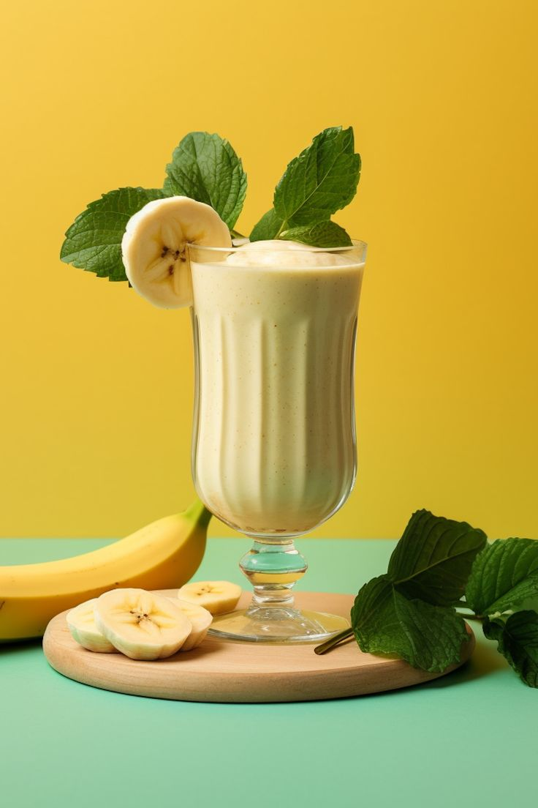📌 Ингредиенты:
- 1 спелый банан
- 100 г замороженных ягод (черника, малина или клубника)
- 100 мл нежирного йогурта или миндального молока
Процесс приготовления.
1. Взбейте все ингредиенты в блендере до получения гладкой массы.
2. Разлейте массу по формочкам или маленьким стаканчикам.
3. Заморозьте на 2–3 часа, периодически перемешивая для равномерной текстуры.
✨Низкокалорийное «мороженое» – вкусное и питательное угощение без сахара!
Морковное мороженое
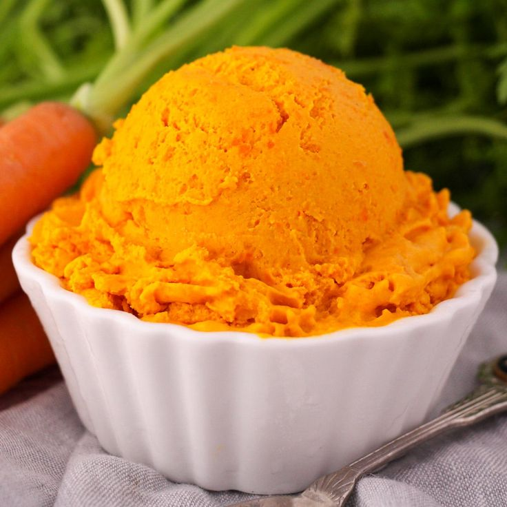📌 Ингредиенты:
- 2 средние моркови (предварительно отваренные до мягкости)
- 1 яблоко
- 1 ч.л. лимонного сока
- По желанию – небольшой кусочек имбиря
Процесс приготовления.
1. Измельчите отваренные морковь и яблоко в блендере, добавьте лимонный сок и имбирь.
2. Взбейте до получения однородного пюре.
3. Заморозьте смесь, перемешивая каждые 30 минут для достижения кремовой текстуры.
✨Невероятно вкусное мороженое, которое насытит витаминами и придаст бодрости!
Греческий йогуртовый парфе с ягодами
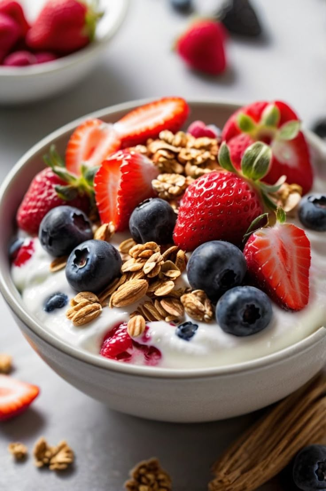📌 Ингредиенты:
- 150 г греческого йогурта
- 50 г мюсли или цельнозерновых овсяных хлопьев
- Свежие ягоды (черника, клубника, малина)
- 1 ч.л. меда или другого натурального подсластителя
Процесс приготовления.
1. В прозрачном стакане или баночке выложите слоями: сначала йогурт, затем мюсли, затем ягоды.
2. Повторите слои, завершив парфе ягодами, и полейте медом сверху.
✨Лёгкий, визуально привлекательный десерт, богатый белками и антиоксидантами!
Миндальное печенье без жарки
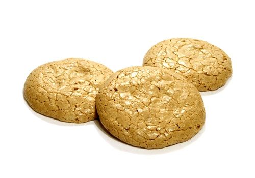📌 Ингредиенты:
- 100 г миндальной муки
- 1 небольшое яйцо
- 1 ч.л. разрыхлителя
- Подсластитель по вкусу (например, стевия)
- 1 ч.л. лимонного сока
Процесс приготовления.
1. Смешайте все ингредиенты до однородного теста.
2. Сформируйте небольшие печенья и выложите на противень, застеленный пергаментной бумагой.
3. Выпекайте при 180°C около 10–12 минут до легкой золотистой корочки.
✨Полезное печенье, богатое полезными жирами и минеральными веществами, станет отличным десертом или перекусом!
Апельсиновое мороженое
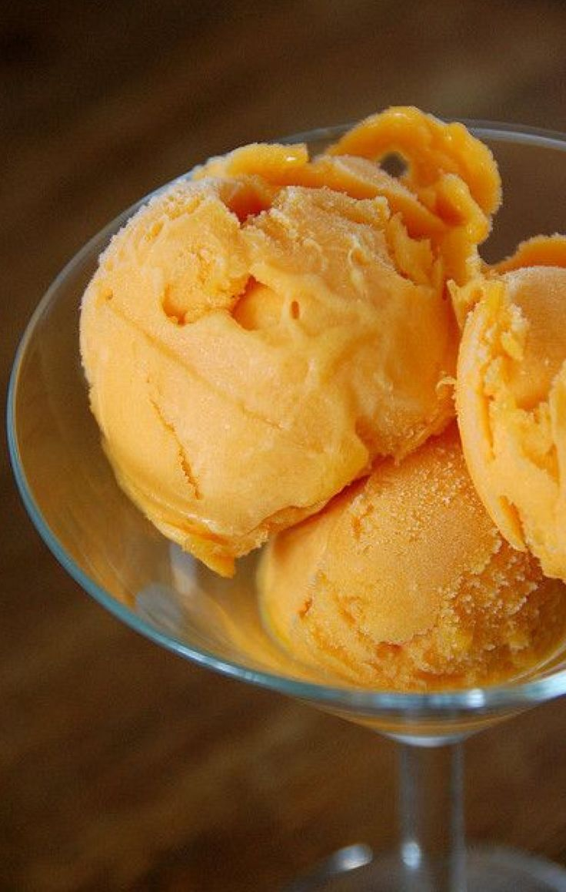📌 Ингредиенты:
- Сок и цедра 3 свежих апельсинов
- 1–2 ч.л. меда (по вкусу)
- 1–2 ст.л. воды (если необходимо)
Процесс приготовления.
1. Выжмите сок из апельсинов и добавьте тертую цедру, мед и немного воды, хорошо перемешайте.
2. Заморозьте смесь в неглубоком контейнере, каждый 30 минут перемешивая для равномерного замораживания.
✨Легкий и освежающий сорбет – прекрасная альтернатива калорийным десертам, который подарит заряд витаминов!
Тарталетки с творогом и ягодами
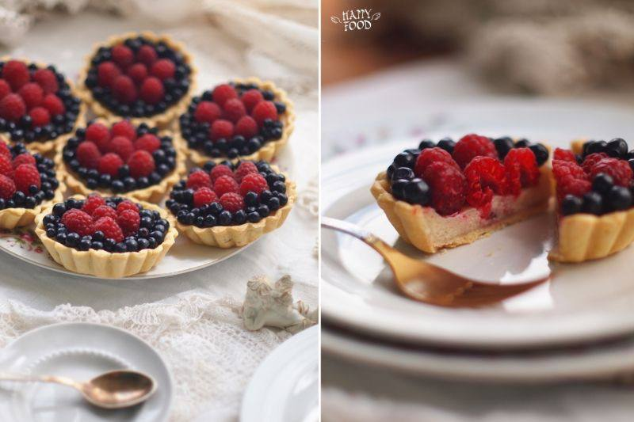📌 Ингредиенты:
- 4–6 цельнозерновых тарталеток (готовая основа или самостоятельно приготовленные из цельнозерновой муки)
- 100 г обезжиренного творога
- 1/2 стакана свежих ягод (клубника, голубика, малина)
- 1 ч. л. мёда или кленового сиропа (по желанию)
Процесс приготовления.
1. В каждую тарталетку выложите ровным слоем творог.
2. Сверху украсьте ягодами.
3. При желании полейте немного мёдом для сладости.
4. Подавайте сразу или немного охладите.
✨ Вкусные тарталетки: бомба белка и витаминов!
Смесь ягод и орехов
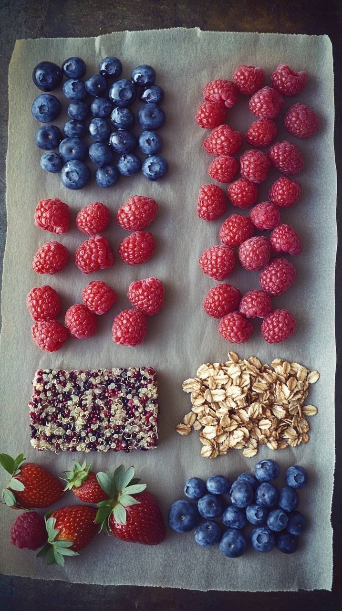📌 Ингредиенты:
- 1 стакан ассорти свежих ягод (черника, малина, клубника)
- 30 г орехов (миндаль, грецкие орехи, рубленые)
- 1 ч. л. семян (тыквенные или подсолнечные)
- По желанию – немного мёда или лимонного сока для заправки
Процесс приготовления.
1. Смешайте ягоды, орехи и семена в небольшой миске.
2. Добавьте каплю лимонного сока или немного мёда для усиления вкуса.
3. Перемешайте и подавайте как лёгкий десерт или перекус.
✨Кажется таким простым, но очень вкусно и полезно!
Овсяная каша с ягодами и орехами

📌 Ингредиенты:
- 1/2 стакана овсяных хлопьев
- 1 стакан воды или растительного молока (например, миндального)
- 1/2 стакана свежих ягод (черника, клубника)
- 1 ст. л. измельчённых орехов (грецкие или миндаль)
- 1 ч. л. семян чиа
- 1 ч. л. натурального мёда или кленового сиропа (по желанию)
Процесс приготовления.
1. Доведите до кипения воду (или растительное молоко) в небольшой кастрюле.
2. Добавьте овсяные хлопья, убавьте огонь и варите, периодически помешивая, около 5–7 минут до загустения.
3. Снимите кастрюлю с огня, добавьте ягоды, орехи, семена чиа и подсластитель по вкусу.
4. Перемешайте и подавайте тёплой.
✨ Овсянка может быть вкусной
Зеленый смузи со шпинатом и яблоком
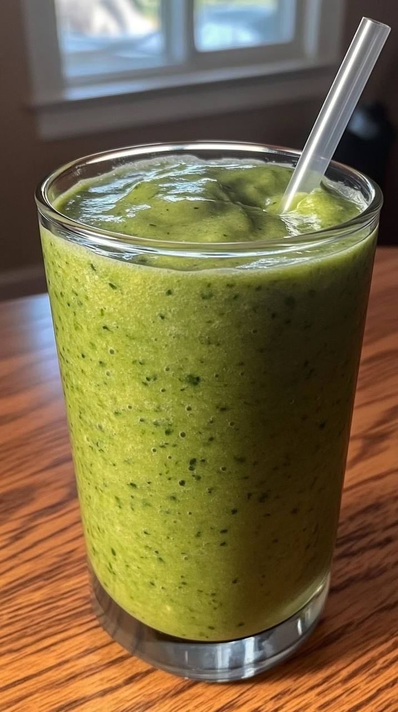📌 Ингредиенты:
- 1 стакан свежего шпината
- 1 зеленое яблоко (очищенное и нарезанное)
- 1 спелый банан
- 1/2 стакана миндального молока
- 1 ч. л. льняных семечек
- Кубики льда (по желанию)
Процесс приготовления.
1. Поместите все ингредиенты в чашу блендера.
2. Взбейте до однородной консистенции, при необходимости добавьте немного льда.
3. Разлейте смузи по стаканам и наслаждайтесь освежающим напитком.
✨Зеленая витаминная бомба в стакане!
Изображения (частично) взяты из Pinterest.